10 Cellers signalering
En cell måste hela tiden känna av sin omgivning och svara på den. En växtcell måste fånga solljuset när det finns. En njurcell måste släppa igenom mer eller mindre vatten beroende på om vi har druckit mycket eller lite. En hårcell i örat måste reagera inom en bråkdel av en millisekund när en ljudvåg når den. Ett influensavirus måste veta när det har kommit in i en cell, så att det kan släppa ut sin arvsmassa.
Allt detta sköts av proteiner i cellens membran. Men för att kunna svara på signaler behöver cellen energi, och mycket av den energin lagras som en laddning över ett membran. Kapitlet bygger därför direkt på Kapitel 9, där vi såg hur protoner som strömmar tillbaka genom membranet driver ATP-syntas.
Det leder till kapitlets första fråga: hur laddas membranet från början? Hos djur kommer energin från maten och hos växter från ljuset. Vi börjar med cytokrom c-oxidas, en protonpump som drivs av elektroner från maten och som förbrukar nästan allt syre vi andas in. Sedan ser vi hur fotosyntesen gör det omvända: med ljusets energi klyver den vatten och bildar syre.
Till sist går vi igenom några kanaler i membranet, proteiner som släpper igenom protoner eller vatten, och ser hur de öppnas, stängs eller sätts in i membranet när cellen får en signal: surhet, ett hormon eller tryck.
10.1 En protonpump: cytokrom c-oxidas
I Kapitel 9 följde vi elektronerna nedför andningskedjans trappa, från NADH till syre. Det sista steget sköts av cytokrom c-oxidas, det andningsenzym som Otto Warburg studerade redan på 1920-talet. Det är ett stort protein som sitter i mitokondriens inre membran. Mer än 90 procent av det syre vi andas in förbrukas av cytokrom c-oxidas.
Enzymet utför två uppgifter på en gång (Figur 10.1):
- Det gör vatten av syre. Det lilla proteinet cytokrom c kommer med elektroner, en i taget, från membranets utsida. Elektronerna går först till ett par kopparatomer, sedan till en järnhaltig hemgrupp och till sist till den plats där syret binder. Där sitter ytterligare en hemgrupp och en kopparatom tillsammans. När fyra elektroner har samlats och fyra protoner har hämtats från membranets insida, bildar syret två vattenmolekyler.
- Det pumpar protoner. Samtidigt pumpar enzymet ytterligare fyra protoner från insidan till utsidan av membranet. Det är det som bidrar till att ladda membranet.
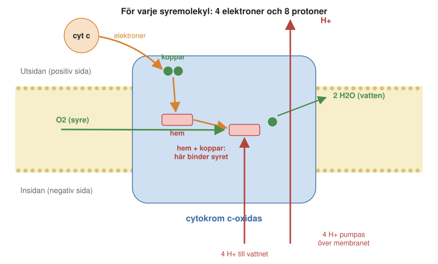
Båda delarna bidrar till spänningen över membranet. Elektronerna, som är negativt laddade, kommer från utsidan. Protonerna som går till vattnet, och som är positivt laddade, hämtas från insidan. Bara genom att vatten bildas flyttas alltså laddning över membranet. De pumpade protonerna flyttar ännu mer laddning.
Hur enzymet ser till att protonerna verkligen pumpas åt rätt håll, och inte läcker tillbaka, är en fråga som forskare har arbetat med i decennier, och som de fortfarande arbetar med. Det handlar om hur enzymets inre vägar för protoner öppnas och stängs i takt med att elektronerna flyttar sig.
Liv i extrema miljöer
Enzymer av samma slag som cytokrom c-oxidas finns hos nästan allt liv som andas syre, också hos organismer som lever under förhållanden som vi skulle tycka är omöjliga. Organismer som trivs i sådana miljöer kallas extremofiler.
Ett exempel är Acidianus ambivalens, en arké (arkéerna är en egen gren av livet, se Avsnitt 2.2) som lever i heta, sura källor. Den trivs bäst när vattnet är omkring 80 grader varmt och nästan lika surt som magsaft (pH 2–2,5). Ändå andas den med ett enzym som i grunden fungerar som vårt.
Extremofiler finns i nästan hela skalan från mycket surt till mycket basiskt, och från under fryspunkten till över 100 grader varmt. Proteinerna hos dessa organismer är byggda för att hålla ihop under förhållanden där våra egna proteiner skulle falla isär. Därför är de också intressanta för bioteknik, där man ofta vill ha enzymer som tål värme eller syra.
En streckkod för alla arter
Cytokrom c-oxidas har också fått en oväntad användning: att artbestämma djur. Enzymet finns hos nästan alla djur, och dess gener ändras långsamt, men ändå tillräckligt för att skilja arter åt. En bit av genen för en av enzymets delar, som kallas COI, används därför som en DNA-streckkod. Genom att läsa av den biten kan man ta reda på vilken art ett prov kommer från, ungefär som när man läser av streckkoden på en vara i affären. Metoden används för att kartlägga den biologiska mångfalden, men också för att avslöja fusk, till exempel när billig fisk säljs under namnet på en dyrare art, eller för att identifiera produkter från hotade djur.
10.2 Fotosyntesen: ljus blir kemisk energi
I andningen tar vi elektroner från maten och lämnar dem till syre, som bildar vatten. I fotosyntesen sker det omvända. Med hjälp av ljusets energi tar växterna elektroner från vatten, och då bildas syre. Elektronerna används sedan till att bygga upp socker av koldioxid ur luften. Sammantaget kan det skrivas så här: sex molekyler koldioxid och sex molekyler vatten blir, med ljusets energi, en molekyl glukos och sex molekyler syre.
Andningen och fotosyntesen bildar ett kretslopp. Växterna gör socker och syre av koldioxid och vatten, och vi, liksom växterna själva, bränner sockret med syret och får tillbaka koldioxid och vatten. Energin i allt detta kommer ytterst från solen.
Fotosyntes finns inte bara hos växter. Den form av fotosyntes som bildar syre uppfanns av cyanobakterier, som förr kallades blågröna alger, och finns också hos alger. (Vissa andra bakterier har en äldre och enklare fotosyntes, som inte klyver vatten och inte bildar syre.) Växterna fick sin fotosyntes från cyanobakterierna: växternas kloroplaster härstammar från cyanobakterier som för mycket länge sedan togs upp av en annan cell och blev kvar som en del av den.
Kloroplasten
Fotosyntesen sker i kloroplasterna, de gröna kornen i växternas celler. Inuti kloroplasten finns ett system av platta membranpåsar, tylakoider, som ofta ligger staplade som myntrullar. I tylakoidmembranet sitter de proteiner som fångar ljuset och flyttar elektroner (Figur 10.2).
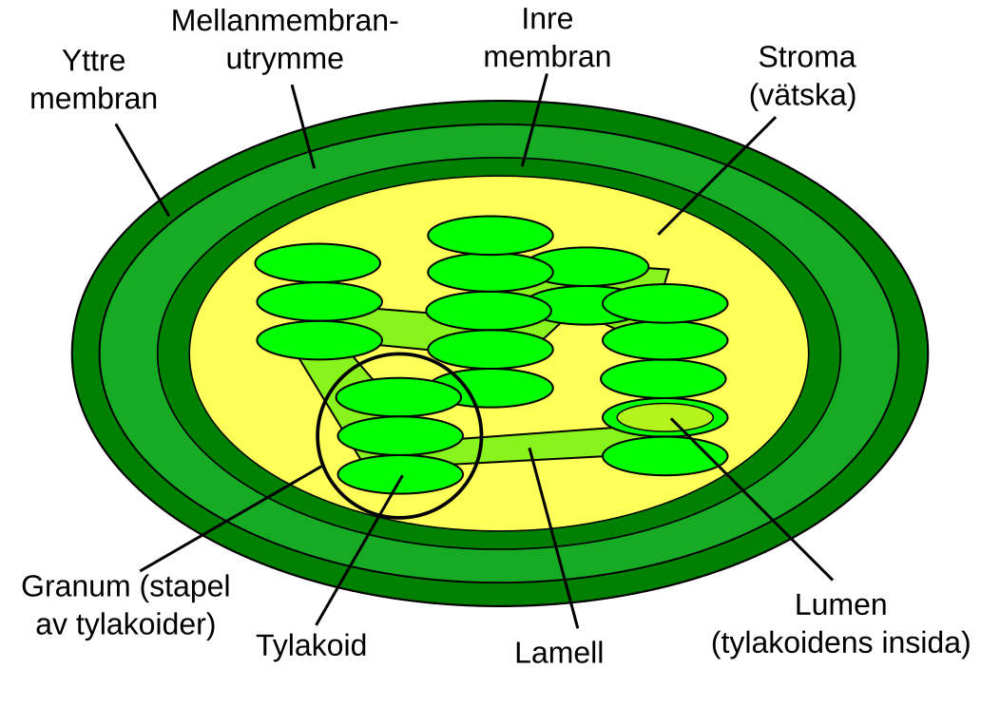
Principen är densamma som i mitokondrien. Elektroner förs genom en kedja av proteinkomplex i ett membran, och samtidigt flyttas protoner över membranet. Den skillnad i protoner mellan membranets två sidor som byggs upp, protongradienten, driver ett ATP-syntas, som är mycket likt mitokondriernas. Skillnaderna är att elektronerna kommer från vatten i stället för från maten, att det är ljuset som ger dem energi, och att de till sist hamnar på bäraren NADPH i stället för på syre. ATP och NADPH används sedan för att bygga socker av koldioxid, i en serie reaktioner som kallas Calvincykeln.
I kedjan ingår tre stora proteinkomplex: fotosystem II, som tar elektroner från vatten, cytokrom b6f, som pumpar protoner, och fotosystem I, som till sist lämnar elektronerna till NADPH.
Varför två fotosystem?
Kedjan har alltså två fotosystem, och båda fångar ljus. Varför räcker det inte med ett? Svaret har att göra med hur mycket energi som behövs och hur mycket energi ljuset innehåller.
Ljus kommer i små energipaket, fotoner. Hur mycket energi en foton har beror på ljusets färg: blått ljus har mer energi per foton än rött. Vatten håller mycket hårt i sina elektroner, och NADPH ligger högt upp i energitrappan. På papperet räcker energin i en foton rött ljus för att lyfta en elektron hela vägen från vatten till NADPH.
Men en stor del av fotonens energi går alltid förlorad. När elektronen har lyfts måste den snabbt föras bort, så att den inte faller tillbaka direkt, och varje sådant steg kostar energi. Det som blir kvar av en röd foton räcker inte för hela vägen. Med ett enda fotosystem skulle växterna bara kunna använda ljus med kortare våglängd och mer energi per foton, och de skulle gå miste om det röda ljuset.
Lösningen är att lyfta elektronerna i två steg, med två fotosystem i rad (Figur 10.3). Fotosystem II använder en foton för att lyfta en elektron från vatten en bit upp. Elektronen faller sedan en bit nedför genom cytokrom b6f, som tar tillvara energin för att pumpa protoner. I fotosystem I lyfts elektronen igen av en andra foton, nu ända upp till NADPH. Med två fotosystem kan växterna därför använda rött ljus, som det finns gott om, och samla in fler av de fotoner som når dem.
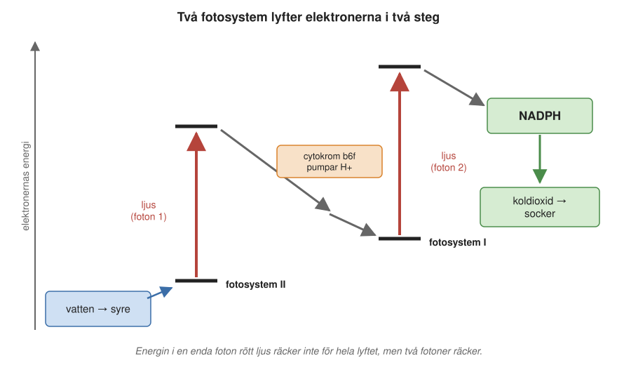
Antenner som samlar ljus
Ljuset fångas av färgämnen. Innan vi ser hur de är ordnade runt fotosystemen ska vi se vilka färger de tar upp. Det gröna färgämnet klorofyll är fotosyntesens viktigaste ljusfångare. Klorofyll absorberar framför allt blått och rött ljus, men nästan inget grönt (Figur 10.4). Det gröna ljuset reflekteras, och det är därför växterna ser gröna ut.
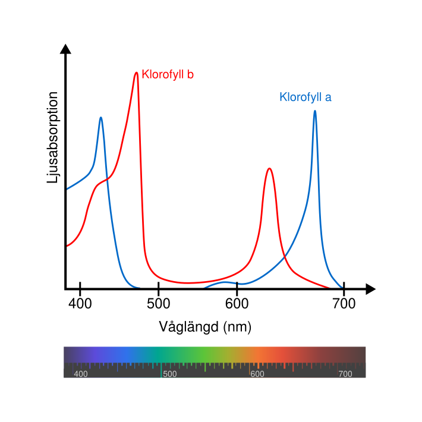
Men ett klorofyll räcker inte långt. Även i fullt solljus träffas varje klorofyllmolekyl bara av ungefär en foton per sekund. Ett fotosystem kan däremot utföra några hundra reaktioner per sekund. Om varje fotosystem bara hade en klorofyllmolekyl skulle det stå sysslolöst nästan hela tiden.
Därför är varje fotosystem omgivet av en antenn: hundratals klorofyllmolekyler, inbäddade i proteiner, som fångar ljuset och skickar energin vidare från molekyl till molekyl, tills den når fotosystemets mitt, reaktionscentret. Där används energin för att flytta en elektron. Antennen fungerar som en tratt som samlar ljus från en stor yta till en liten punkt (Figur 10.5).
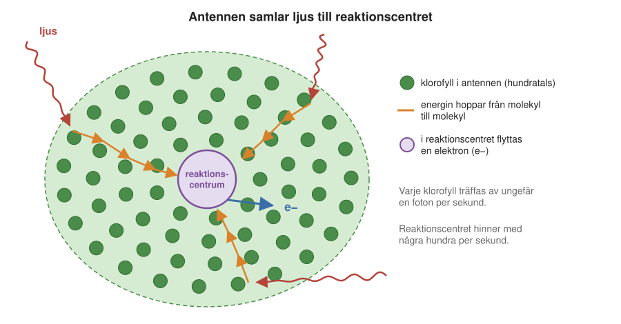
I antennerna finns också andra färgämnen. Karotenoider, till exempel karoten (som ger morötter deras färg) och de gula xantofyllerna, fångar blågrönt ljus som klorofyllet missar. De skyddar också fotosystemen mot skador när ljuset är för starkt. Hos cyanobakterier och rödalger finns dessutom blå och röda färgämnen som fångar grönt, gult och orange ljus.
Karotenoiderna kan vi se själva på hösten. När växten bryter ned klorofyllet i bladen framträder de gula och orange färgerna som hela tiden har funnits där. De röda höstfärgerna kommer från andra färgämnen, som många växter bildar just på hösten.
10.3 Att klyva vatten
Den mest anmärkningsvärda reaktionen i fotosyntesen sker i fotosystem II. Där tas elektroner från vatten, och vattnet klyvs till syre och protoner. Det är en mycket svår reaktion. Vatten är en av de stabilaste molekylerna vi känner till, och ingen människotillverkad katalysator gör det lika effektivt med hjälp av synligt ljus.
Syret i atmosfären
Vattenklyvningen är inte bara en svår reaktion. Den har också format jordens atmosfär: nästan allt syre i luften vi andas har bildats på detta sätt. När jorden var ung fanns nästan inget fritt syre i atmosfären. När cyanobakterierna “uppfann” vattenklyvningen började syre släppas ut. Till en början reagerade syret med järn och andra ämnen i haven och berggrunden, men för omkring 2,4 miljarder år sedan började syre ansamlas i luften (Figur 10.6). Händelsen brukar kallas den stora syresättningen.
Den stora syresättningen förändrade livets villkor på jorden. Många organismer som inte tålde syre dog ut eller trängdes undan till syrefria miljöer, medan andra lärde sig att utnyttja syret för andning, som ger mycket mer energi. Syret gav också upphov till ozonskiktet, som skyddar mot solens ultravioletta strålning. Halten nådde ungefär dagens nivå först för några hundra miljoner år sedan.
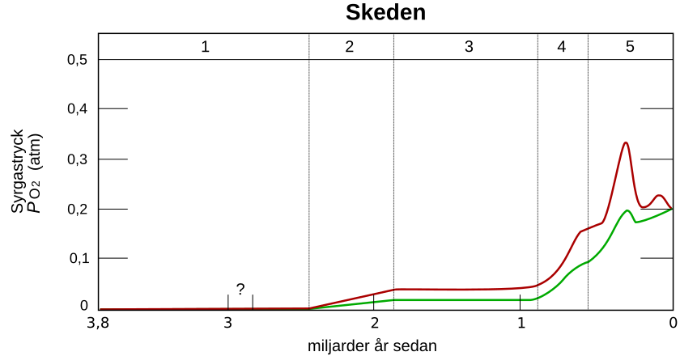
Fyra blixtar för en syremolekyl
Hur går det då till när vattnet klyvs? I fotosystem II sitter ett litet kluster av fyra manganatomer, en kalciumatom och fem syreatomer. Det kallas det syrgasutvecklande centret och är den plats där vattnet klyvs. För att bilda en syremolekyl måste fyra elektroner tas från två vattenmolekyler. Men reaktionscentret kan bara flytta en elektron åt gången, en för varje foton. Klustret måste alltså samla på sig fyra “hål” innan syret kan bildas.
Det visades på ett elegant sätt 1969 av den franske forskaren Pierre Joliot. Han höll alger i mörker och belyste dem sedan med en serie mycket korta ljusblixtar, så korta att varje fotosystem bara kunde fånga en foton per blixt. Efter varje blixt mätte han hur mycket syre som bildades. Resultatet var överraskande. Efter de två första blixtarna bildades nästan inget syre. Efter den tredje bildades mycket, och sedan kom en topp var fjärde blixt (Figur 10.7). Svängningarna dämpades efter hand, eftersom fotosystemen kom ur takt med varandra.
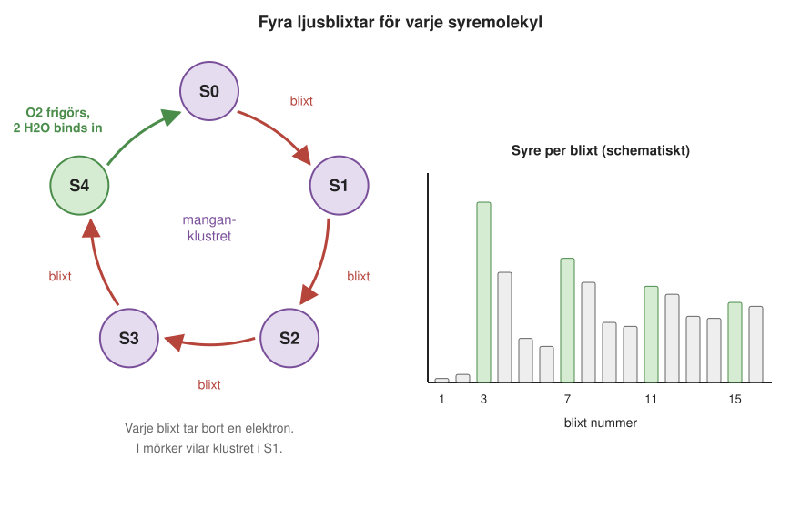
Varför kom syret var fjärde blixt, och varför redan vid den tredje? Förklaringen gavs året efter av Bessel Kok och hans kolleger. Klustret kan befinna sig i fem olika lägen, som kallas S0 till S4. Varje blixt för det ett steg framåt. När S4 nås bildas syre, och klustret återgår till S0. I mörker vilar klustret i läget S1, och därför behövs tre blixtar innan det första syret frigörs.
Molekylära filmer med röntgenlaser
Hur ser då klustret ut, och vad händer med atomerna i varje steg? För att se enskilda atomer i ett protein används röntgenkristallografi, där man låter röntgenstrålning passera genom en kristall av proteinet och räknar ut strukturen från hur strålningen sprids (Kapitel 6 och Kapitel 8). År 2011 lyckades en japansk forskargrupp bestämma strukturen hos fotosystem II så noggrant att manganklustrets form kunde ses i detalj. Klustret liknar en sned stol.
Men vanlig röntgenkristallografi har två begränsningar. Den ger en stillbild, inte en film. Och den kraftiga röntgenstrålningen kan i sig förändra klustret, eftersom mangan lätt tar upp elektroner som frigörs av strålningen. Lösningen har blivit röntgenfrielektronlasern (eng. X-ray free-electron laser, XFEL). Det är en upp till flera kilometer lång anläggning där elektroner accelereras till nästan ljusets hastighet och får sända ut extremt korta och intensiva pulser av röntgenstrålning. En puls varar bara några femtosekunder, några miljondels miljarddels sekunder. Det är så kort att man hinner registrera hur strålningen sprids innan molekylen förstörs av den.
Med röntgenlasern kan man göra en sorts film. Små kristaller av fotosystem II sprutas i en tunn stråle genom röntgenpulsen. Strax innan träffas de av en eller flera ljusblixtar från en vanlig laser, som sätter igång vattenklyvningen. Genom att variera tiden mellan ljusblixten och röntgenpulsen kan man få bilder av klustret i olika steg av cykeln och sätta ihop dem till en film (Figur 10.8). På så sätt har forskare kunnat följa hur atomerna i manganklustret flyttar sig mellan stegen och var vattnet tas in. Sådana anläggningar finns bland annat i USA, Japan och Tyskland (European XFEL i Hamburg, som Sverige är med och driver).
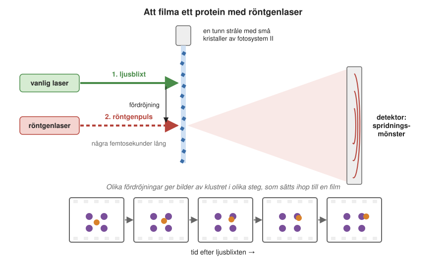
10.4 Kanaler som öppnas och stängs
Både cytokrom c-oxidas och fotosystemen flyttar protoner och elektroner genom membranet med hjälp av energi. Men det finns också proteiner som bara öppnar en väg genom membranet, kanaler, så att protoner, joner eller vatten kan passera av sig själva, från den sida där de är många till den sida där de är få. I Kapitel 8 mötte vi jonkanaler och vattenkanaler och såg hur de är byggda. Här ska vi se hur några kanaler regleras av signaler från omgivningen, och vad det betyder för hälsa och sjukdom.
Gramicidin: en av de enklaste kanalerna
Vi börjar med en kanal som inte regleras alls, för att se hur lite som behövs för att göra ett hål i ett membran, och vad ett sådant hål ställer till med. En av de enklaste kanaler man känner till är gramicidin A. Det är inte ens ett riktigt protein, utan en kort kedja av 15 aminosyror som tillverkas av en jordbakterie. Kedjan bildar en spiral med ett hål i mitten. Två sådana spiraler kan ställa sig ände mot ände tvärs genom ett membran och bilda en tunn kanal, som släpper igenom vatten, protoner och små positiva joner som natrium och kalium.
Gramicidin var ett av de första antibiotika som användes. Det upptäcktes 1939 av René Dubos. När kanalerna bildas i bakteriers membran läcker jonerna ut och in, och membranets laddning går förlorad. Bakterien kan då varken tillverka ATP eller ta upp näring. Gramicidin är dock giftigt också för våra egna celler och används därför bara på ytan, till exempel i vissa halstabletter (i Sverige Bafucin) och ögondroppar.
En kanal som känner av surhet: influensavirusets M2
Influensa A-viruset har en proteinkanal som heter M2 i sitt hölje. M2 består av fyra likadana spiraler som tillsammans bildar en smal kanal genom membranet. Kanalen är normalt stängd, men den öppnas när omgivningen blir sur. Det är en signal som viruset utnyttjar för att veta när det har kommit in i en cell.
När ett influensavirus infekterar en cell tas det först in i en liten blåsa (en vesikel), som cellen bildar av sitt eget membran. Cellen pumpar sedan protoner in i blåsan, så att den blir sur. Den sura miljön öppnar M2-kanalen. Protoner strömmar in i viruset, och det får virusets inre proteiner att släppa taget om arvsmassan. Samtidigt får den sura miljön virusets hölje att smälta samman med blåsans membran, och den nu lösa arvsmassan kan ta sig ut i cellen, som börjar tillverka nya virus. Utan fungerande M2 kommer arvsmassan inte loss, och infektionen stannar av.
Hur känner då kanalen av att det har blivit surt? Mitt i kanalen sitter fyra histidiner, en aminosyra som lätt tar upp protoner. När omgivningen blir sur blir histidinerna positivt laddade och stöter bort varandra. Då vrids en grind av fyra andra aminosyror, tryptofaner, undan, och kanalen öppnas.
Eftersom viruset inte klarar sig utan M2 är kanalen ett bra mål för läkemedel. Läkemedlet amantadin verkar genom att täppa till M2-kanalen. Det sätter sig som en propp i kanalens mynning, så att protonerna inte kan ta sig in (Figur 10.9).
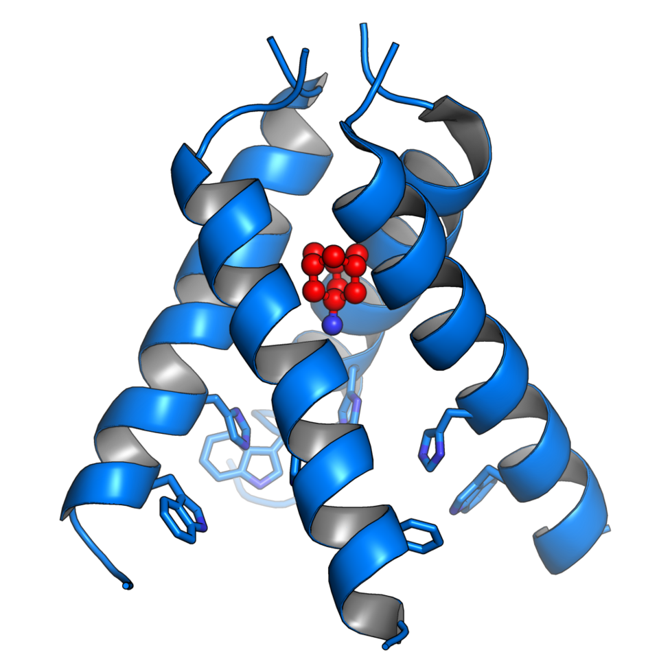
Amantadin användes länge mot influensa. Men små förändringar i M2 kan göra att läkemedlet inte längre fastnar. Det räcker att en enda aminosyra i kanalen byts ut, till exempel att serin på plats 31 ersätts av asparagin. Under 1990-talet var resistenta virus mycket ovanliga. Från omkring 2003 ökade de mycket snabbt, först i Asien, och några år senare var nästan alla virus av typen H3N2, en av de vanliga säsongsinfluensorna, resistenta. Även det pandemiska viruset från 2009, “svininfluensan” av typen H1N1, var resistent.
I dag är motståndskraften i princip hundraprocentig, eftersom mutationerna har blivit en fast del av virusets arvsmassa. Amantadin rekommenderas därför inte längre mot influensa. Det är ett tydligt exempel på hur snabbt ett virus kan anpassa sig till ett läkemedel.
Att reglera vattenkanalerna
Vatten kan ta sig igenom ett membran även utan hjälp, men långsamt. Där vattnet behöver gå snabbt finns vattenkanaler, eller akvaporiner (Figur 10.10). Hur de är byggda, och hur de släpper igenom vatten men inte protoner, såg vi i Avsnitt 8.5. Här ska vi se hur cellen reglerar sina vattenkanaler.
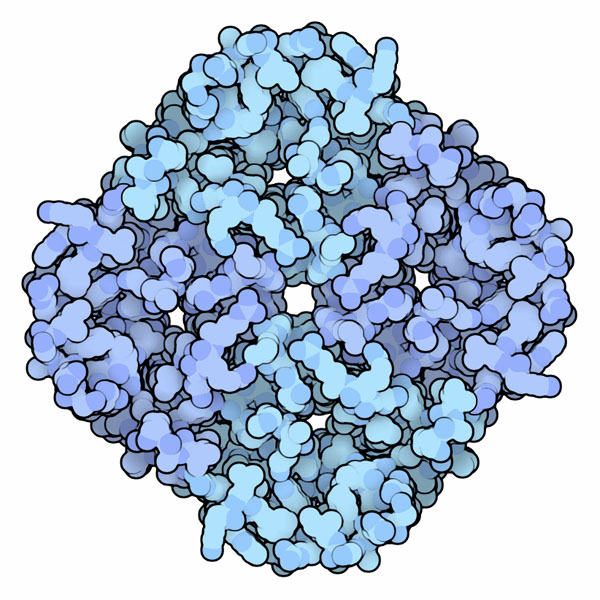
Akvaporiner finns i nästan alla organ i kroppen: i ögat, i spottkörtlarna, i lungorna, i hjärnan och i de röda blodkropparna. Men de är särskilt viktiga i njurarna.
Njurarna och vasopressin
Varje dygn filtrerar njurarna omkring 180 liter vätska ur blodet. Det är den så kallade primärurinen. Ändå kissar vi bara ut ett par liter om dagen. Nästan allt vatten tas alltså upp igen, och det sker genom vattenkanaler i njurarnas små rör. På vissa ställen sitter vattenkanalen AQP1 fast hela tiden. Men i den sista delen, i samlingsrören, finns AQP2, och där regleras mängden efter kroppens behov.
Regleringen sköts av hormonet vasopressin, som också kallas antidiuretiskt hormon, det hormon som minskar urinmängden. Det bildas i en del av hjärnan och släpps ut i blodet från hypofysen, en liten körtel under hjärnan, när kroppen behöver spara vatten, till exempel när vi är törstiga.
Vasopressin binder till en receptor på njurcellerna, ett protein som känner igen hormonet (se Avsnitt 2.11.2). Det sätter igång en signal i cellen, som får små blåsor med AQP2 att smälta samman med den del av cellmembranet som vetter mot urinen (Figur 10.11). Då fylls membranet med vattenkanaler, vatten tas upp från urinen och urinen blir koncentrerad. När kroppen har vatten nog upphör vasopressinet, AQP2 tas tillbaka in i cellen och mer vatten lämnar kroppen med urinen.
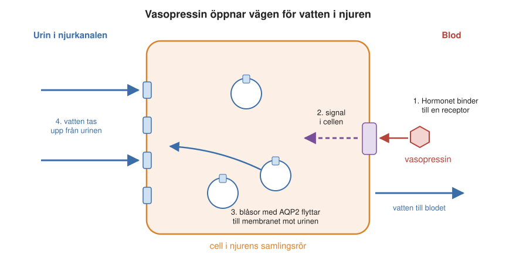
Detta förklarar en välkänd erfarenhet. Alkohol hämmar utsöndringen av vasopressin. Då sätts färre vattenkanaler in i njurarna, vi kissar mer än vi dricker, och kroppen torkar ut. Det är en del av förklaringen till att man mår dåligt dagen efter.
Vad som händer när systemet inte fungerar alls syns vid en ärftlig sjukdom. Om AQP2 eller vasopressinets receptor inte fungerar på grund av en ärftlig förändring kan njurarna inte koncentrera urinen. Det leder till sjukdomen nefrogen diabetes insipidus, där man kissar ut mycket stora mängder utspädd urin och ständigt är törstig.
Vattenkanaler hos växter
Växterna har också vattenkanaler, och för dem är vattnet ännu mer avgörande. Vid torka måste växten hushålla med vattnet och stänga sina vattenkanaler. En svensk forskargrupp i Göteborg och Lund kunde 2006 bestämma strukturen hos en vattenkanal från spenat, både i stängt och öppet läge. Den visade att kanalen stängs av en slinga i proteinet som lägger sig som ett lock över kanalens öppning (Figur 10.12).
Om kanalen är öppen eller stängd styrs av en fosfatgrupp som cellen kan sätta på eller ta bort. När växten har gott om vatten sitter fosfatgruppen på och kanalen är öppen. Vid torka tas fosfatgruppen bort och kanalen stängs. Kanalen stängs också när cellens insida blir sur, vilket händer när rötterna står i vatten och får för lite syre.
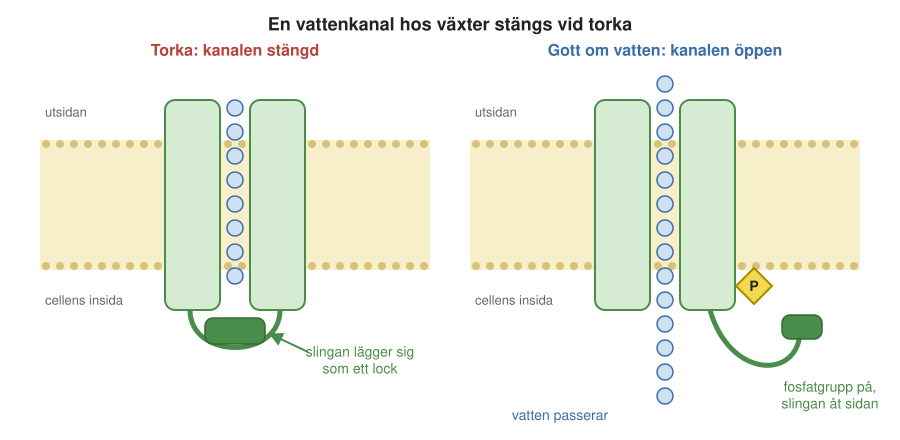
Kanaler som öppnas av tryck och rörelse
Den sista sortens signal vi ska se på är mekanisk: tryck, sträckning och rörelse. Kanaler som öppnas när membranet sträcks eller när något drar i dem kallas mekanokänsliga kanaler. Hur de fungerar, från bakteriernas säkerhetsventiler till Piezo-kanalerna som gör att vi känner beröring, beskrivs i Avsnitt 8.6. Här ska vi se på ett exempel där de används som sinnesorgan.
Hörseln
Ett särskilt elegant exempel finns i innerörat. Där sitter hårceller, celler med en knippe av styva utskott på toppen, ordnade i rader efter längd som orgelpipor. Utskotten är förbundna med varandra av tunna proteintrådar. När en ljudvåg får knippet att böja sig åt ena hållet sträcks trådarna och drar upp mekanokänsliga kanaler i utskottens spetsar (Figur 10.13). Positiva joner strömmar in i hårcellen, som skickar en signal vidare till hörselnerven. När knippet böjer sig tillbaka stängs kanalerna igen.
Det här måste gå mycket fort. Vi kan höra toner med frekvenser upp till omkring 20 000 svängningar per sekund. En ton på 200 svängningar per sekund har en period på 5 millisekunder, och en på 20 000 svängningar per sekund bara 0,05 millisekunder. Kanalerna öppnas och stängs därför på mindre än en tiondels millisekund, vilket är mycket snabbare än de flesta andra signaler i kroppen. Snabbheten behövs också för att vi ska kunna höra varifrån ett ljud kommer. Ett ljud från sidan når det ena örat lite tidigare än det andra, men skillnaden är som mest ungefär en halv millisekund. Hjärnan kan ändå avgöra från vilket håll ljudet kom.
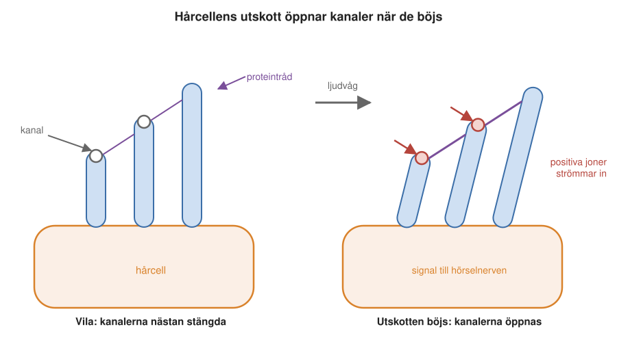
10.5 Sammanfattning
- Cytokrom c-oxidas, andningskedjans sista enzym, tar emot elektroner från cytokrom c och gör vatten av syre, och pumpar samtidigt protoner över membranet. Mer än 90 procent av det syre vi andas in förbrukas av detta enzym.
- Liknande enzymer finns hos organismer i extrema miljöer, och en bit av genen för cytokrom c-oxidas används som DNA-streckkod för att artbestämma djur.
- I fotosyntesen tas elektroner från vatten med hjälp av ljus, och syre bildas. Två fotosystem i rad behövs för att lyfta elektronerna hela vägen från vatten till NADPH med rött ljus, eftersom mycket av varje fotons energi går förlorad på vägen. Antenner med hundratals klorofyllmolekyler samlar ljuset till varje reaktionscentrum.
- Vattnet klyvs i ett kluster av mangan och kalcium i fotosystem II, som måste ta emot fyra fotoner, en i taget, för varje syremolekyl. Det har gett allt syre i atmosfären, som började ansamlas för omkring 2,4 miljarder år sedan.
- Med röntgenfrielektronlasrar kan man göra “filmer” av hur atomerna rör sig i ett protein medan det arbetar.
- Kanaler i membranet styrs av signaler: influensavirusets M2-kanal öppnas av surhet, hormonet vasopressin styr hur många vattenkanaler som sätts in i njurcellernas membran, växternas vattenkanaler öppnas och stängs med fosfatgrupper och mekanokänsliga kanaler öppnas av tryck och rörelse.
- Läkemedlet amantadin täpper till M2-kanalen, men influensaviruset har blivit resistent genom små förändringar i kanalen.
10.6 Nyckelbegrepp
- cytokrom c-oxidas – Andningskedjans sista enzym. Tar emot elektroner från cytokrom c, gör vatten av syre och pumpar samtidigt protoner över membranet.
- protonpump – Ett membranprotein som använder energi, till exempel från elektroner eller ljus, för att flytta protoner över ett membran mot gradienten.
- extremofil – Organism som lever under extrema förhållanden, till exempel i mycket hett, surt eller salt vatten.
- DNA-streckkod – En kort bit av en gen, för djur oftast genen för en del av cytokrom c-oxidas (COI), som skiljer sig mellan arter och används för att artbestämma prover.
- fotosyntes – Processen där växter, alger och cyanobakterier med hjälp av ljusets energi tar elektroner från vatten och bygger socker av koldioxid. Syre bildas.
- cyanobakterier – Bakterier som har fotosyntes och bildar syre, förr kallade blågröna alger. Växternas kloroplaster härstammar från dem.
- kloroplast – Organell i växt- och algceller där fotosyntesen sker. Innehåller tylakoidmembran med fotosystem och ATP-syntas.
- tylakoid – Platt membranpåse inuti kloroplasten. I tylakoidmembranet sitter fotosystemen, cytokrom b6f och ATP-syntas.
- fotosystem – Stort proteinkomplex i tylakoidmembranet som fångar ljus och använder energin för att flytta elektroner. Växter har två, fotosystem I och II.
- foton – Ett litet energipaket av ljus. Blått ljus har mer energi per foton än rött.
- klorofyll – Grönt färgämne som fångar ljus i fotosyntesen. Absorberar blått och rött ljus men reflekterar grönt.
- antenn – Hundratals färgämnesmolekyler kring ett fotosystem som fångar ljus och leder energin vidare till reaktionscentret.
- karotenoider – Gula och orange färgämnen, till exempel karoten och xantofyller, som hjälper till att fånga ljus och skyddar fotosystemen mot för starkt ljus.
- syrgasutvecklande centret – Ett kluster av fyra manganatomer, en kalciumatom och fem syreatomer i fotosystem II, där vatten klyvs till syre, protoner och elektroner.
- röntgenfrielektronlaser – Anläggning som ger extremt korta och intensiva pulser av röntgenstrålning (eng. X-ray free-electron laser, XFEL). Används bland annat för att göra filmer av proteiner i arbete.
- kanal – Ett membranprotein som bildar en öppning genom membranet, så att joner, protoner eller vatten kan passera av sig själva. Många kanaler kan öppnas och stängas.
- gramicidin – Kort kedja av aminosyror från en jordbakterie som bildar en kanal genom membran. Används som antibiotikum på huden och i halsen.
- M2 – Protonkanal i influensa A-virusets hölje som öppnas av sur miljö och behövs för att viruset ska kunna släppa ut sin arvsmassa i cellen.
- amantadin – Läkemedel som täpper till influensavirusets M2-kanal. Används inte längre mot influensa, eftersom nästan alla virus har blivit resistenta.
- vasopressin – Hormon från hjärnan (antidiuretiskt hormon) som får njurarna att ta upp mer vatten, genom att vattenkanalen AQP2 sätts in i njurcellernas membran.
- mekanokänslig kanal – Kanal som öppnas när membranet sträcks eller när något drar i den. Ger oss känsel och hörsel, och skyddar bakterier mot att spricka.
- hårcell – Sinnescell i innerörat med en knippe utskott på toppen. När knippet böjs av en ljudvåg öppnas mekanokänsliga kanaler och en signal går till hörselnerven.
10.7 Testa dig själv
Flervalsfrågor
Välj ett svar och tryck på Rätta. Svarsalternativen visas i ny ordning varje gång.
Fundera vidare
10.1 Jämför andningen och fotosyntesen. På vilka sätt är de varandras motsats, och vad har de gemensamt?
10.2 Förklara Joliots blixtexperiment och vad det säger om hur vatten klyvs i fotosystem II.
10.3 Ge tre exempel från kapitlet på kanaler som öppnas eller stängs av en signal. Vilken är signalen, och vad blir följden?
10.4 Amantadin slutade fungera mot influensa efter några decennier. Vad säger det om hur virus anpassar sig till läkemedel, och vad kan man lära sig av det?
Hjälp oss att förbättra kapitlet
Hittade du ett fel, eller något som var svårt att förstå? Skicka ett förslag i förslagsformuläret (kräver inloggning med SU-konto). Lärarna läser alla förslag inför nästa version av boken.
10.8 Läs mer
- Fotosyntes och Cytokrom c-oxidas på svenska Wikipedia.
- Photosystem II, Cytochrome c Oxidase, Aquaporin och Mechanosensitive Channels, Molecule of the Month på PDB-101 (på engelska).
- Nobelpriset i kemi 2003, för upptäckten av vattenkanaler och studier av jonkanaler (på engelska).
- Great Oxidation Event på engelska Wikipedia, om hur syret kom till atmosfären.
- DNA-streckkodning på svenska Wikipedia.